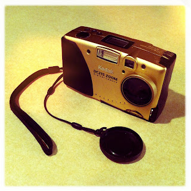

Recovered weblog entry
A nice find

While helping the parents remove their old carpet, I found a gem: my first digital camera. It's an 11 year old Kodak DC215. While only 1 mp, it took nice shots. I'm thinking of loading some batteries and taking it for a spin later. Lens: Chunky
Film: Ina's 1935